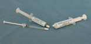

Installation - Thermal Interfacing
In all applications where heat is transferred, there are thermal
resistances to overcome. The greatest thermal resistance's in thermal
systems are normally found at interfaces between component parts. To
minimise these, it is preferable to eliminate any unnecessary thermal
joints wherever it is possible. Remaining thermal joints then need to
be optimised for good heat conduction. For jointing surfaces to have a
good thermal interface they need to be in intimate contact with each
other. This requires each surface to have a fine surface finish, and be
flat or co-planer to the adjoining surface.
Good
thermal interfacing is often difficult to achieve, uneven surfaces and
necessary fitting tolerances often result in poor surface contact. In
some instances this can result in only several points of contact
despite having a large surface contact area available. Generally, it is
necessary to use a suitable interfacing material to compensate for
surface irregularities of roughness and undulation. Where possible,
close fitting, properly solder brazed interfaces provide the most
satisfactory solution.

Thermal Interface Compounds
Where soldering of joints is not an option, CRS Engineering offers two types of installation compounds:
Coolflex 90, a non setting high thermally conductive paste. (available in a 10 cc syringe).
Coolbond 85, a two-part high thermally conductive epoxy adhesive. (available in a 5 cc syringe with phial of accelerator).
Important note:
Whereas
soldering of Heat-pipes is an excellent means of forming a good thermal
joint, it should not be attempted without prior consultation with CRS
Engineering.
Accurate temperature control equipment is normally necessary and
without this component damage or serious personal injury can occur.
CRS Engineering can provide this service for customers during manufacture and assembly
Fitting of Heat-pipes into drilled holes
Installation of tubular Heat-pipes into drilled components can offer a
simple and convenient method of assembly.The drilling size of the
Heat-pipe should allow a radial gap of between +0.05 mm and +0.12 mm
(+0.002/+0.005”) around the Heat-pipe. Standard range CRS Heat-pipes
are produced with a diametrical tolerance of +0.0/-0.1mm. so that they
will easily fit into holes drilled to the nominal diametrical size.
(Note: drilled holes are invariably marginally oversize depending upon
the concentricity of the individual drill bit used, it is advisable
therefore to first pilot drill the hole location with a smaller
diameter drill bit.